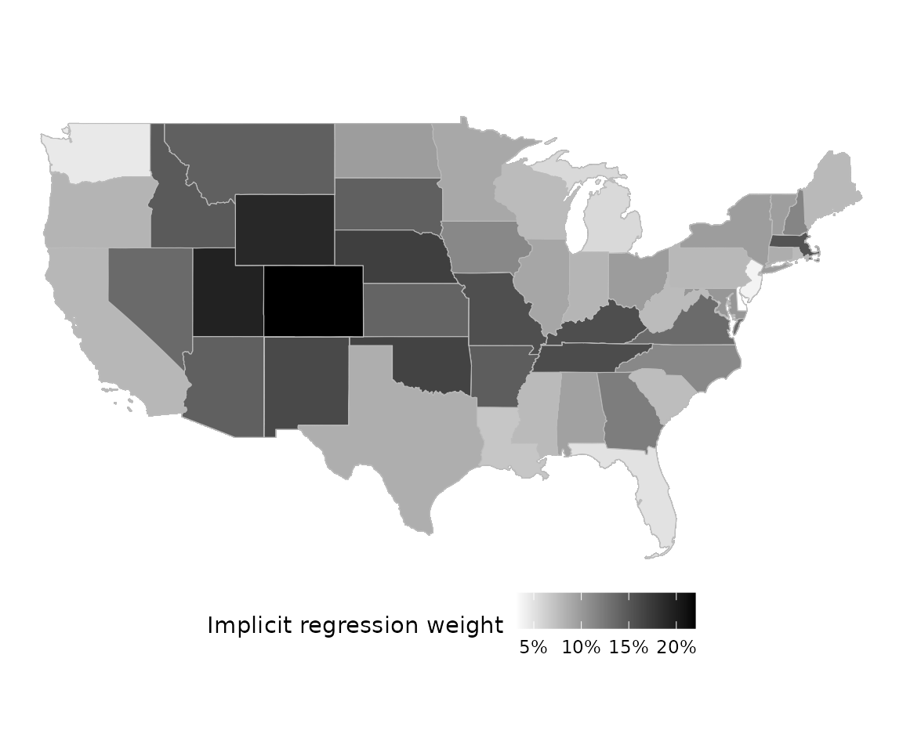

Example Usage
Drew Dimmery (drew.dimmery@gmail.com)
13 August, 2025
Source:vignettes/example-usage.Rmd
example-usage.RmdIntroduction
Aronow and Samii (2015) provide a convenient way to understand why a linear regression provides the particular estimate that it does. Given the following linear model estimated by OLS,
In the presence of heterogeneity in the effect of on , however, will be a weighted average of the unit-specific effects, :
This weight is equal to the conditional variance of in expectation: .
These weights can be easily estimated through a partial linear regression of the form:
Implicit regression weights are then just the squared residuals of this regression.
The intuition of this is that a unit-specific coefficient in OLS will, in general, be up-weighted when it’s harder to explain that variable’s value from the other covariates in the model. If a unit’s is very easy to predict, then it will not figure prominently in the aggregate OLS estimate of the effect.
This is distinct from more conventional regression diagnostics like leverage, because those focus on how the entire vector of coefficients change. Most analysts, however, have specific hypotheses on specific coefficients, however, so the implicit regression weights demonstrate, essentially, the term-specific leverage.
Load packages and setup environment
##
## Attaching package: 'dplyr'## The following objects are masked from 'package:stats':
##
## filter, lag## The following objects are masked from 'package:base':
##
## intersect, setdiff, setequal, union## Linking to GEOS 3.12.1, GDAL 3.8.4, PROJ 9.4.0; sf_use_s2() is TRUE
library(regweight)
data("LaLonde", package = "CBPS")
df <- dplyr::filter(
LaLonde,
(exper == 1 & treat == 1) | (exper == 0 & treat == 0)
)
model <- lm(
log(re78 + 1) ~ treat + age + educ + black + hisp + married + nodegr +
log(re74 + 1) + log(re75 + 1) + re74.miss,
df
)
summary(model)##
## Call:
## lm(formula = log(re78 + 1) ~ treat + age + educ + black + hisp +
## married + nodegr + log(re74 + 1) + log(re75 + 1) + re74.miss,
## data = df)
##
## Residuals:
## Min 1Q Median 3Q Max
## -10.3859 0.0860 0.5236 0.9107 7.2818
##
## Coefficients:
## Estimate Std. Error t value Pr(>|t|)
## (Intercept) 3.302403 0.483647 6.828 1.05e-11 ***
## treat 0.359638 0.225490 1.595 0.110845
## age -0.019126 0.005447 -3.511 0.000453 ***
## educ 0.051214 0.026673 1.920 0.054952 .
## black 0.021713 0.129822 0.167 0.867184
## hisp 0.399143 0.273189 1.461 0.144114
## married 0.357764 0.153319 2.333 0.019695 *
## nodegr -0.242343 0.172315 -1.406 0.159719
## log(re74 + 1) 0.172411 0.025421 6.782 1.44e-11 ***
## log(re75 + 1) 0.430511 0.024304 17.713 < 2e-16 ***
## re74.miss -0.615033 0.182580 -3.369 0.000766 ***
## ---
## Signif. codes: 0 '***' 0.001 '**' 0.01 '*' 0.05 '.' 0.1 ' ' 1
##
## Residual standard error: 2.697 on 2776 degrees of freedom
## Multiple R-squared: 0.3546, Adjusted R-squared: 0.3523
## F-statistic: 152.6 on 10 and 2776 DF, p-value: < 2.2e-16Examine regression weights
Plots will make a best effort to infer the appropriate type of a given covariate. If you aren’t happy with how they look, it’s simple enough to use the underlying functions called by the S3 method directly. They are:
regweight::plot_weighting_discreteregweight::plot_weighting_continuousregweight::plot_weighting_map
rw_mod <- calculate_weights(model, "treat")
hist(rw_mod) + scale_x_continuous("Weight")## Scale for x is already present.
## Adding another scale for x, which will replace the existing scale.
Discrete covariates
plot(rw_mod, df$married) + scale_x_continuous("Married", breaks = c(0, 1))## Scale for x is already present.
## Adding another scale for x, which will replace the existing scale.
plot(rw_mod, df$nodegr) + scale_x_continuous("No degree", breaks = c(0, 1))## Scale for x is already present.
## Adding another scale for x, which will replace the existing scale.
plot(rw_mod, df$black) + scale_x_continuous("Black", breaks = c(0, 1))## Scale for x is already present.
## Adding another scale for x, which will replace the existing scale.
Continuous covariates
plot(rw_mod, df$age) + scale_x_continuous("Age")## Scale for x is already present.
## Adding another scale for x, which will replace the existing scale.
plot(rw_mod, df$re74) + scale_x_continuous("Income (1974)")## Scale for x is already present.
## Adding another scale for x, which will replace the existing scale.
Summary table
It’s also easy to include a table of summary statistics for the nominal and implicit samples across a variety of covariates:
| Mean | Std. Dev. | Mean | Std. Dev. | ||
|---|---|---|---|---|---|
| Discrete variables | |||||
| married | |||||
| nodegr | |||||
| re74.miss | |||||
| Continuous variables | |||||
| age | |||||
| re74 | |||||
Mapping
For the sake of example, let’s imagine that we had geographical
information on each unit, as well. Geometries/shapes should be specified
in sf::sfc format.
# Download and extract US state boundaries from Census Bureau
temp_zip <- tempfile(fileext = ".zip")
temp_dir <- tempdir()
download.file(
"https://www2.census.gov/geo/tiger/GENZ2018/shp/cb_2018_us_state_20m.zip",
temp_zip, mode = "wb", quiet = TRUE
)
unzip(temp_zip, exdir = temp_dir)
state_shapes <- sf::st_read(
file.path(temp_dir, "cb_2018_us_state_20m.shp"), quiet = TRUE
)
state_shapes <- dplyr::filter(state_shapes, !(STUSPS %in% c("HI", "PR", "AK")))
pr_state <- seq(1, 10, length = nrow(state_shapes))
pr_state <- pr_state / sum(pr_state)
df$geometry <- sample(
state_shapes$geometry, nrow(df), replace = TRUE, prob = pr_state
)
plot(rw_mod, df$geometry)